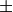

DirectILLIntegrateVanadium dialog.
Table of Contents
| Name | Direction | Type | Default | Description |
|---|---|---|---|---|
| InputWorkspace | Input | MatrixWorkspace | Mandatory | A workspace to be integrated. |
| OutputWorkspace | Output | Workspace | Mandatory | The integrated workspace. |
| Cleanup | Input | string | Cleanup ON | What to do with intermediate workspaces. Allowed values: [‘Cleanup ON’, ‘Cleanup OFF’] |
| SubalgorithmLogging | Input | string | Logging OFF | Enable or disable subalgorithms to print in the logs. Allowed values: [‘Logging OFF’, ‘Logging ON’] |
| EPPWorkspace | Input | TableWorkspace | Mandatory | Table workspace containing results from the FindEPP algorithm. |
| DebyeWallerCorrection | Input | string | Correction ON | Enable or disable the correction for the Debye-Waller factor for OutputWorkspace. Allowed values: [‘Correction ON’, ‘Correction OFF’] |
| Temperature | Input | number | Optional | Vanadium temperature in Kelvin for Debye-Waller correction, overrides the default value from the sample logs. |
This algorithm integrates the workspace given in InputWorkspace using the ComputeCalibrationCoefVan algorithm. It is part of ILL’s direct geometry reduction algorithms.
Note
At the moment, the integration range is fixed to  3 * FWHM ( ) times the ‘Sigma’ column in EPPWorkspace).
) times the ‘Sigma’ column in EPPWorkspace).
The algorithm will also mask detectors for which the integral is zero. This is to prevent vanadium normalization later in the reduction from injecting infinities in the final  .
.
The InputWorkspace should be loaded using the DirectILLCollectData algorithm. It will also give the EPP workspace needed for EPPWorkspace.
A correction for the Debye-Waller factor is applied to the integrated vanadium, as explained in the documentation of ComputeCalibrationCoefVan. The temperature for the DWF calculation is taken from the sample logs of the InputWorkspace. This value can be overridden by the Temperature property, if needed.
For usage of this algorithm, check the examples here.
Categories: AlgorithmIndex | ILL\Direct | Inelastic\Reduction | Workflow\Inelastic
Python: DirectILLIntegrateVanadium.py (last modified: 2019-03-11)